Olá! Sou
Alexsandro Rodrigues da Silva
Mecânico Automotivo
Certificando SENAI 2027
Serviços por Agendamento
Sábados e Feriados
das 8h às 18h
Contato (81) 9
9809-0037
- City Of Blinding Lights
- Depois Da Guerra
- Elevation
- Meus Passos
- Every Breaking Wave
- Meus Próprios Meios
- Invisible
- Muros
- I Still Haven't Found What I'm Looking For
- Obediência
- Pride
- Until The End Of The World
- Vertigo
Serviços
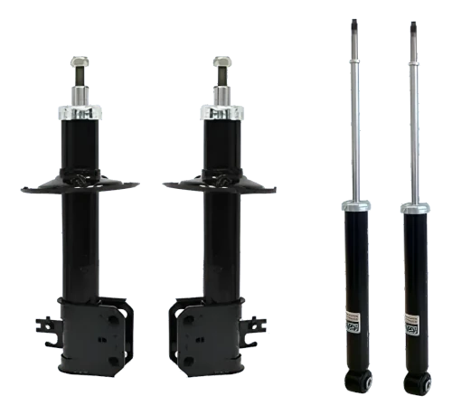
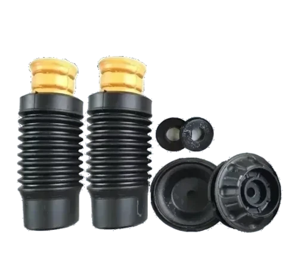
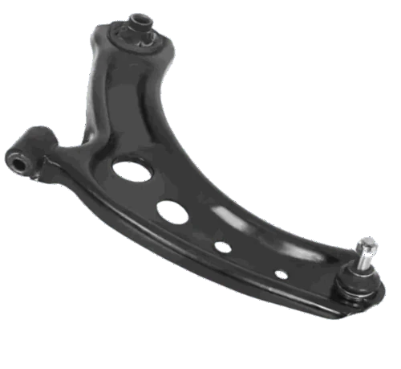
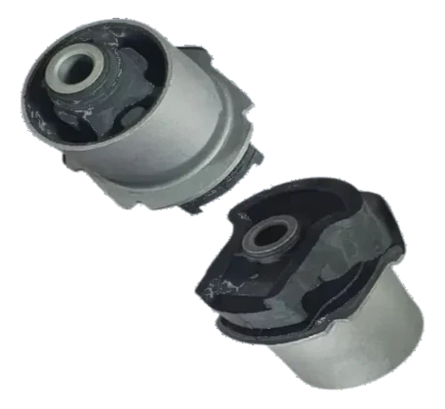
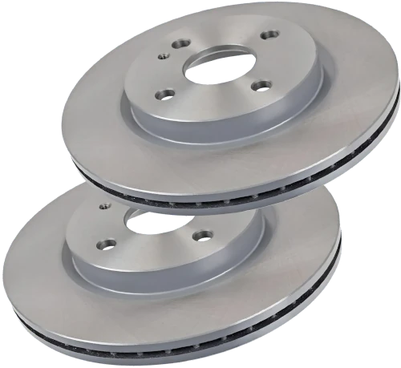
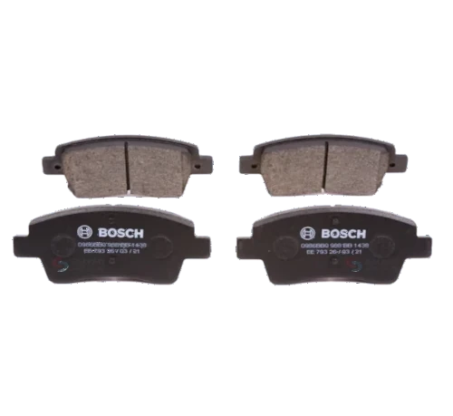
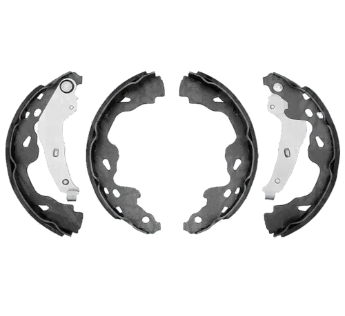
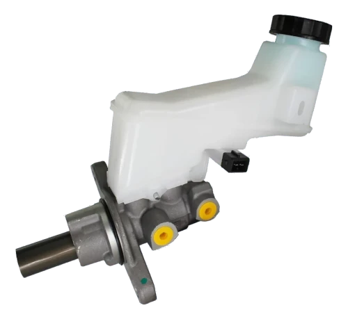
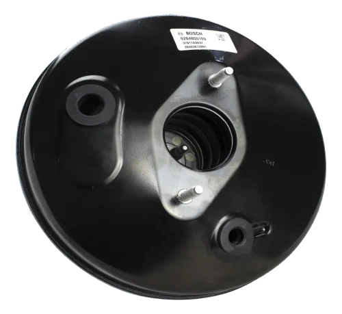
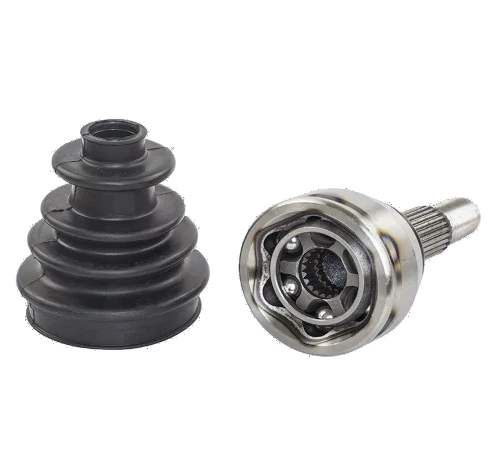
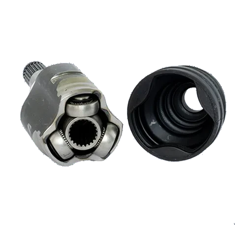
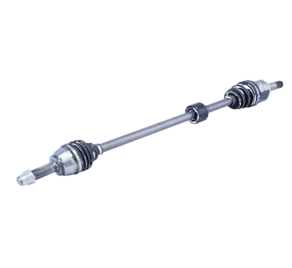
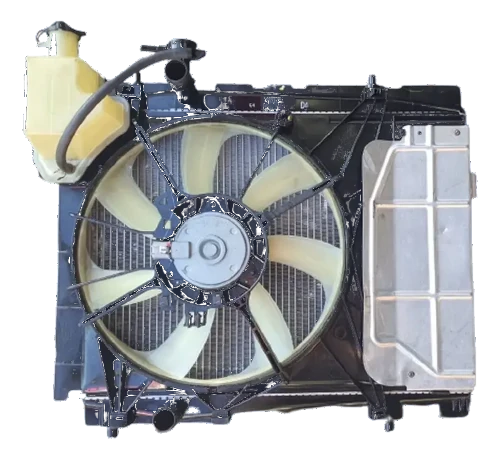
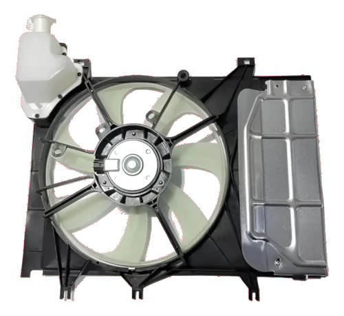
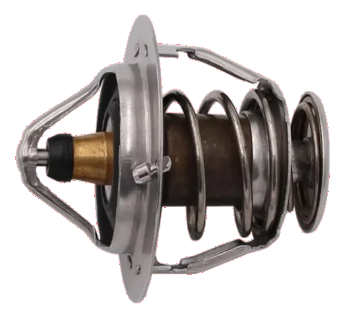
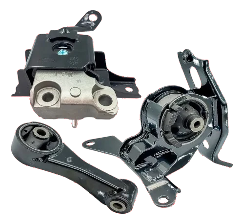
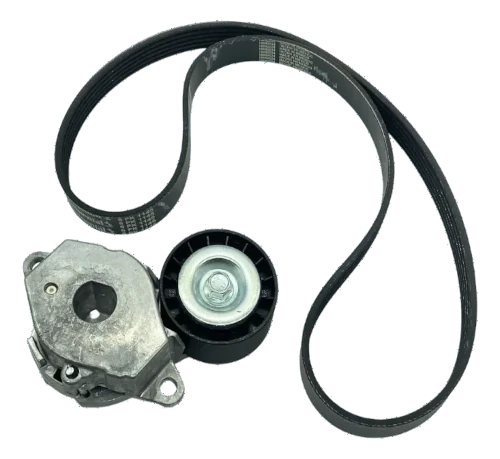
Dicas
- Embreagem
- Amortecedores
- Coxins e batedores
- Bandejas
- Buchas traseira
- Discos de Freio
- Pastilhas de freio
- Lonas de freio
- Cilindro mestre
- Servo freio
- Junta homocinética
- Deslizante e trizeta
- Radiador
- Eletro ventilador
- Válvula termostática
- Coxins do motor
- Correia e rolamento
Embreagens
Quando reparar?
- 1. Embreagem deslizando ou patinando: perda de aderência do disco.
- 2. Barrulho metálico extranho quando o pedal é acionado: quebra do colar de embreagem.
- 3. Vazamento de óleo do atuador.
Amortecedores
Quando reparar?
- 1. Perda da compressão; vazamento do óleo, sem controle das oscilações das molas.
- 2. Travamento; suspensão com pouca ou nenhuma oscilações das molas.
Coxins e batedores
Quando reparar?
- 1. Desgaste do batedor; esfarelamento.
- 2. Desgaste do coxin; barrulho extranho na extremidade da aste do amortecedor.
Bandejas
Quando reparar?
- 1. Buchas estragadas.
- 2. Pivô com folga; necessário elevação do veículo.
Buchas traseira
Discos de Freio
Quando reparar?
- 1. Desgaste excessivo; as paredes do disco ficam mais finas e com irregularidades. É possível retificar
Pastilhas de freio
Quando reparar?
- 1. Desgaste natural; é comum ouvir um barulho metálico (do limitador) quando estão no momento da troca. Algumas possuem um sensor eletrônico.
Lonas de freio
Quando reparar?
- 1. Desgaste natural; o freio de mão fica aparentemente desrregulado ou não estaciona o veículo.
- Relação de troca 2x1 em função da troca das pastilha; trocar na segunda troca das pastilhas.
Cilindro mestre
Quando reparar?
- 1. Desgaste de o'rings e/ou vazamento de fluído; o pedal de freio fica sem pressão, quase encostando no açoalho. É possível ver vazamento de fluído de freio.
Servo freio
Quando reparar?
- 1. Pedal do freio fica "pesado"; é necessário mais esforço para frear. É possível ouvir um barulho de ar escapando.
Junta homocinética
Quando reparar?
- 1. Barulho de "estalo" metálico ao esterçar a direção; o barulho é mais evidente quando numa curva em velocidade lenta.
Deslizante e trizeta
Quando reparar?
- 1. Barulho de "estalo" metálico quando em linha reta ao redor de 80km/h.
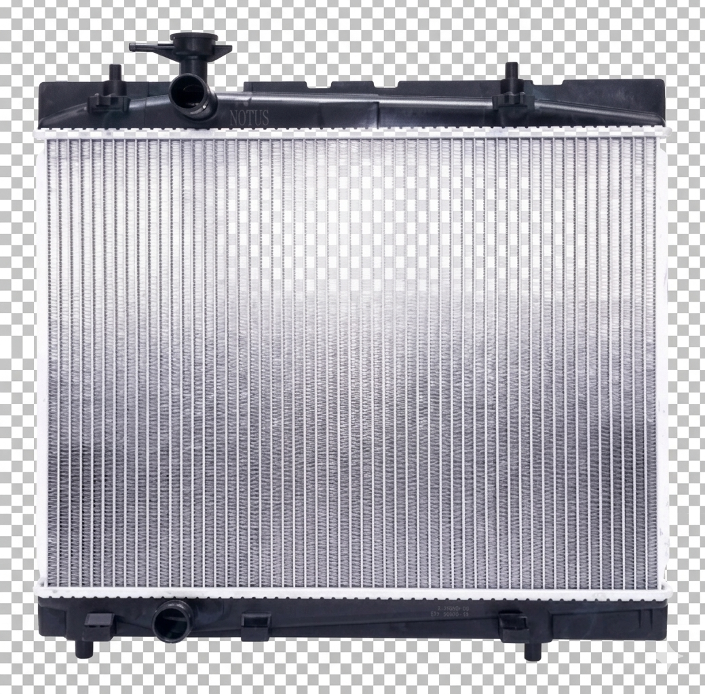
Radiador
Quando reparar?
- O principal sinal de que existem problemas nesse sistema é o superaquecimento.
- 1. Vazamento ou entupimento.
Eletro ventilador
Quando reparar?
- O principal sinal de que existem problemas nesse sistema é o superaquecimento.
- 1. Mal funcionamento do eletro ventilador.
Válvula termostática
Quando reparar?
- O principal sinal de que existem problemas nesse sistema é o superaquecimento.
- 1. Válvula travada
Coxins do motor
Quando reparar?
- 1. É possível perceber uma vibração excessiva do motor ao arrancar ou na marcha ré por causa do desgaste das borrachas
Correia e rolamento
Quando reparar?
- 1. Um barulho extranho ocorre principalmente quando se dá a partida pelo desgaste da correia e/ou rolamento